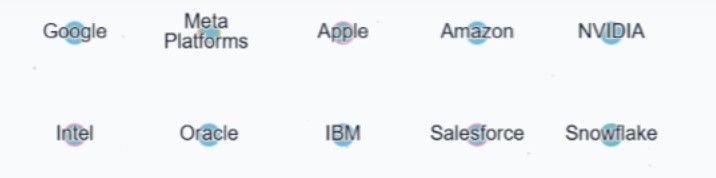
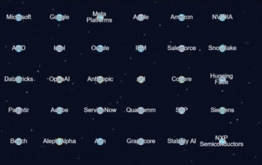

Explore the Directory
The Artiligenz Live Directory has two main views — Universe and Grid — plus filters, search, and navigation controls. Here's how to use them.
1. Choose a view
Switch between:
- Universe: a full AI "galaxy" showing structure and clusters.
- Grid: neat rows/columns for scanning names + logos.


2. Filters & Search
Use the sidebar to slice the map in real time:
- Category chips show one main segment (single-select).
- Search highlights entities instantly as you type.
- Changing view resets filters and recenters layout.

3. Navigating the map
- Pan + zoom directly using your mouse or trackpad.
- "Nav Controls" toggle is only on the main directory (not here).
- The Reset button recenters the layout instantly.
4. Microcards & Profiles
- Microcard: shows logo, category, quick actions.
- More: opens a full profile drawer.
- Explore: shows local "neighbourhood" orbits (if available).